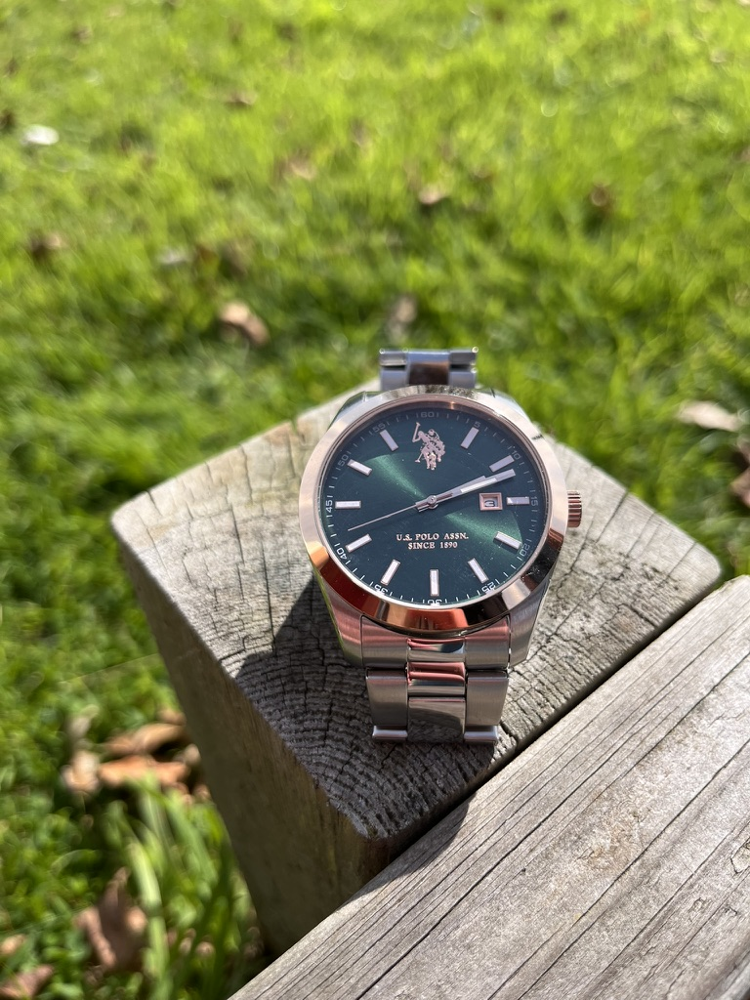

Projet associatif autour de la pédagogie et des milieux aquatiques.
Contexte
Un documentaire qui laisse respirer le sujet
Le film devait rester juste et discret. L'idée n'était pas de sur-expliquer une pratique, mais de rendre visible ce qui se transmet dans la relation, le geste et l'attention au lieu.
Réalisation, conduite d'interview, cadre et montage.
Mini-documentaire à l'approche sensible et peu démonstrative.

Une image simple, au plus près du terrain et des personnes filmées.
Réalisation
Laisser le terrain porter le récit
La forme a été volontairement sobre, avec une présence discrète de la caméra et un montage qui garde de l'air au lieu d'ajouter de la démonstration.
- Lumière naturelle et cadre au plus près des gestes.
- Montage respirant, sans sur-explication.
- Importance du son et de l'ambiance de terrain.
Point clé
La justesse du ton comptait plus que l'effet. Il fallait rester à l'écoute du sujet, pas le surligner.
Images
Repères visuels du projet

Réalisation, cadre, interview et montage dans une logique documentaire très sobre.
Ce projet confirme qu'une forme discrète peut être plus forte qu'une mise en scène trop appuyée.